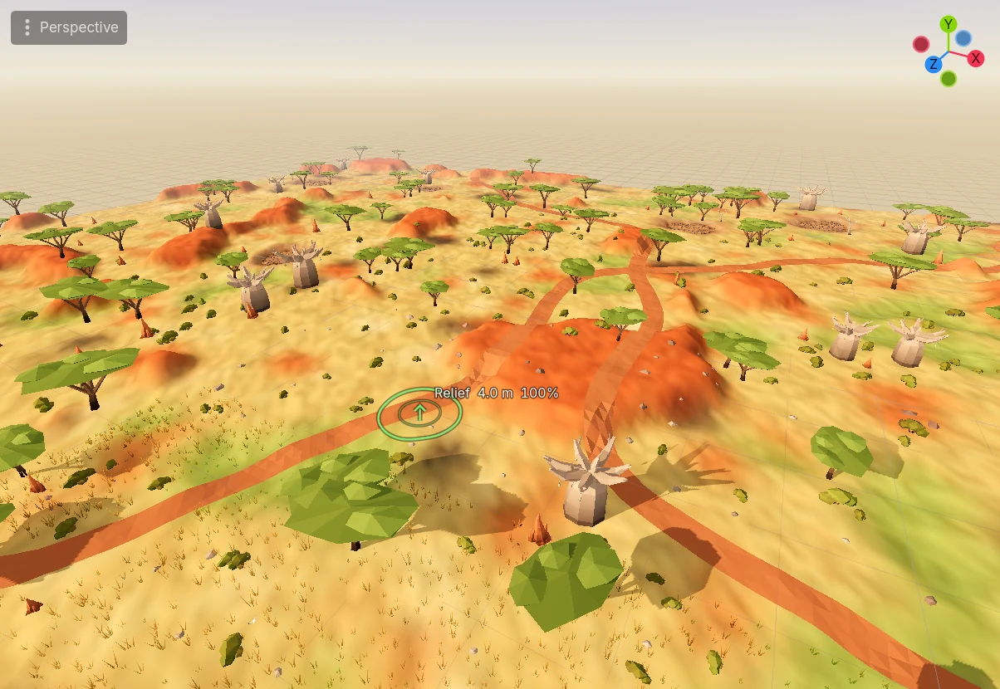
Paint it
Seven tools in the 3D editor menu bar: Ground, Relief, Flatten, Road, River, Waterhole and Vegetation. Drag to apply, Ctrl+drag to do the opposite.
Tools and keysAn editor plugin that builds faceted 3D landscapes: ground styles, relief, roads, rivers, dried waterholes, grass, trees and props. Paint them in the 3D view, make a whole map from a seed, or draw one as a small pixel image.
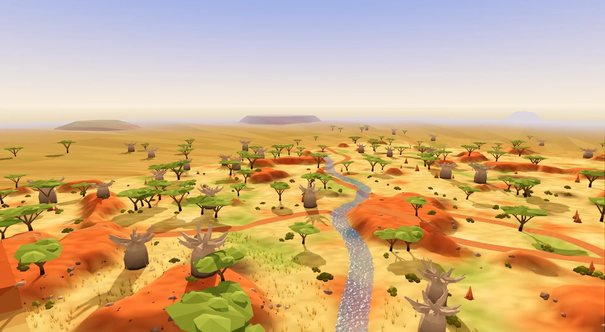
Mix them freely: generate a map, then retouch it by hand. Every change can be undone.

Seven tools in the 3D editor menu bar: Ground, Relief, Flatten, Road, River, Waterhole and Vegetation. Drag to apply, Ctrl+drag to do the opposite.
Tools and keys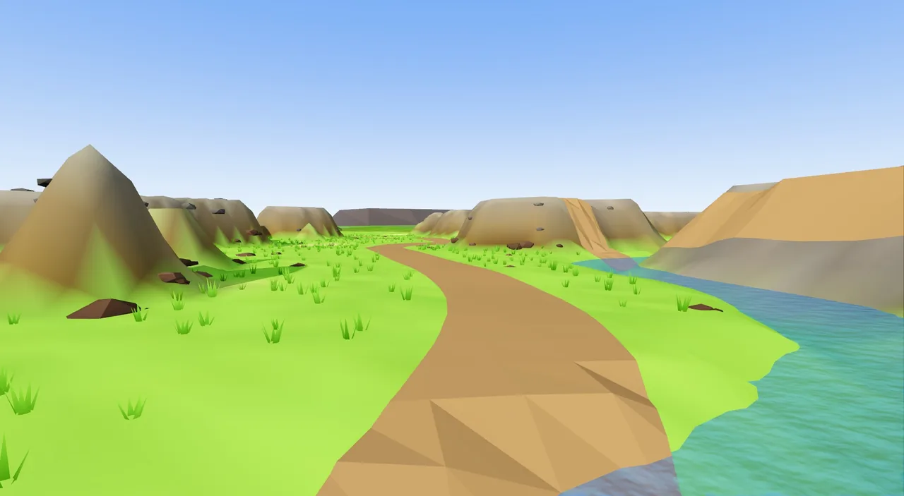
Pick a map recipe, set a seed, click Generate Map: plateaus, lowlands, rivers, tracks, waterholes and plants. The same seed always gives the same map.
Generate Map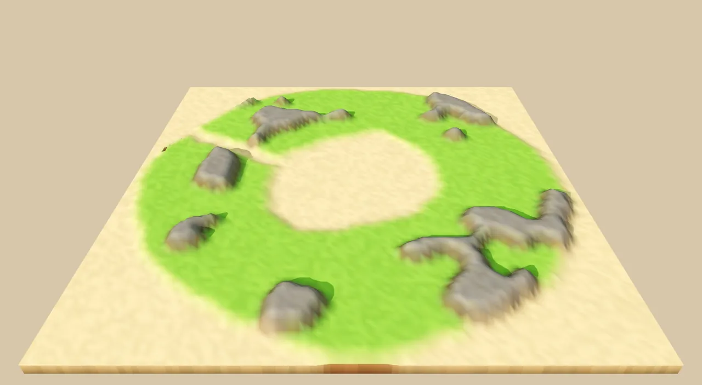
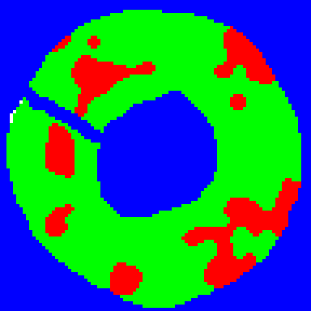
One pixel is one terrain cell, in four colours. Paint it anywhere, or in the Pixel Map Editor in your browser, then click Generate from Image.
Pixel mapsSelect a terrain and its tools appear in the 3D menu bar. A ring under the mouse shows where the tool acts and how big it is. Every setting lives in the Inspector, with a tooltip.
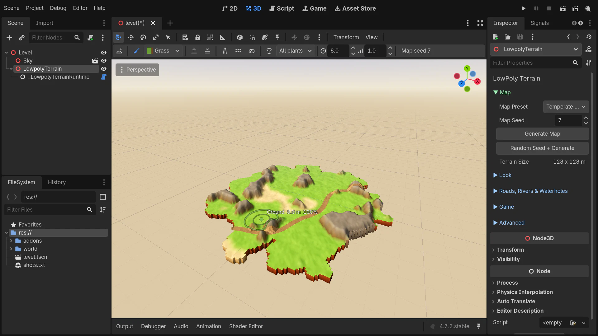
All of these come from the same click on Generate Map (Senegal Savanna preset, seed 7, one river added), untouched. The light is the test project's: the plugin builds the terrain, your game lights it.
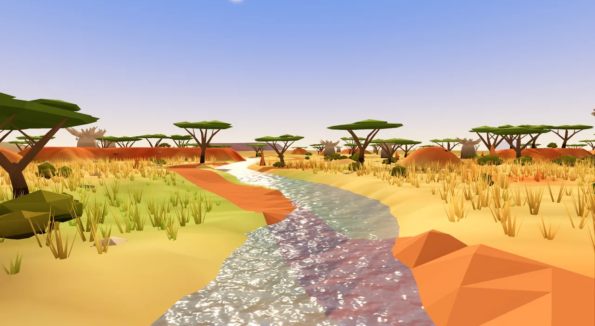
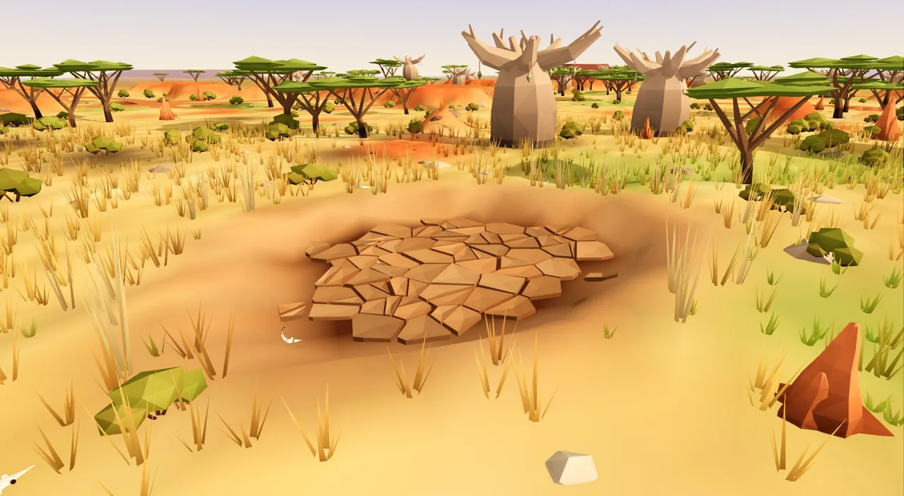
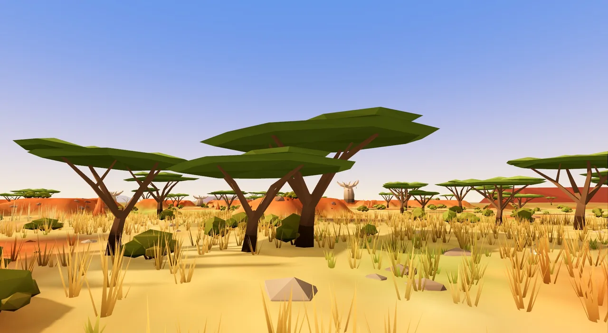
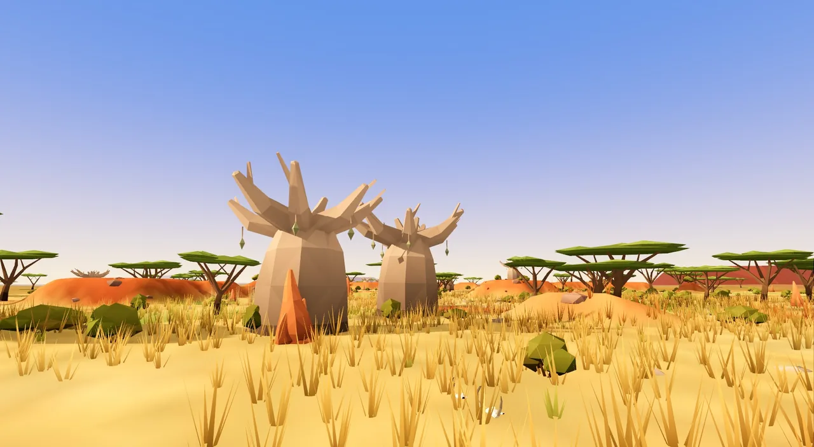
Ground styles, baked shading, waterhole colours and what grows where, on which ground and slope. Savanna and Temperate come with the plugin; the others below are made with the biome API, each on its own generated map.
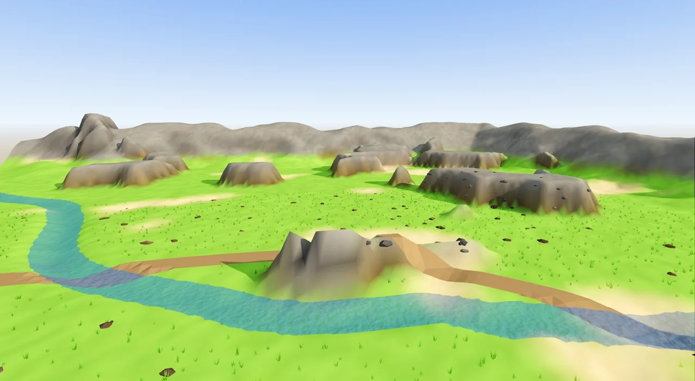
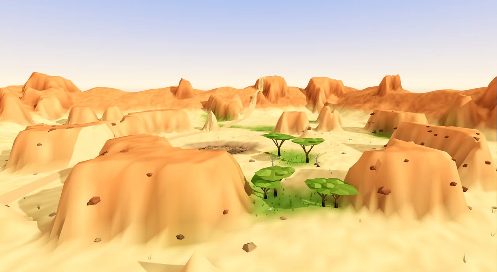
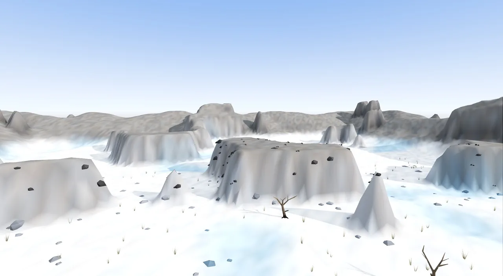
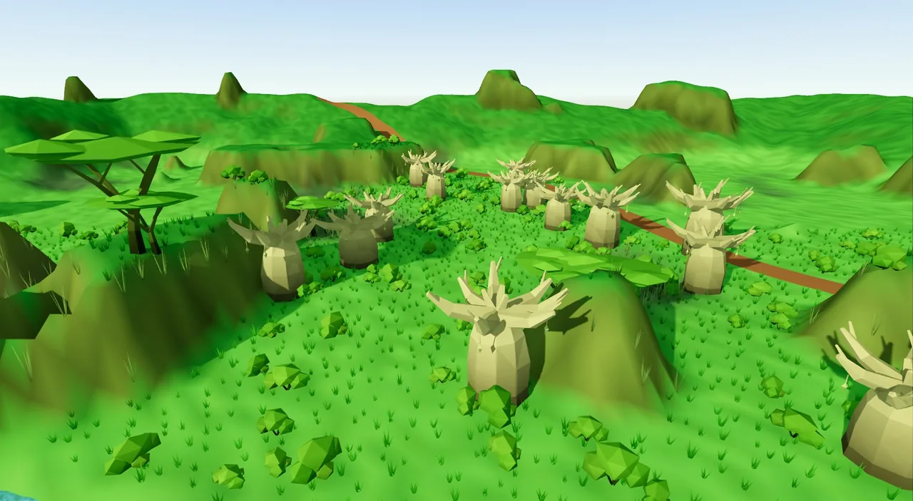
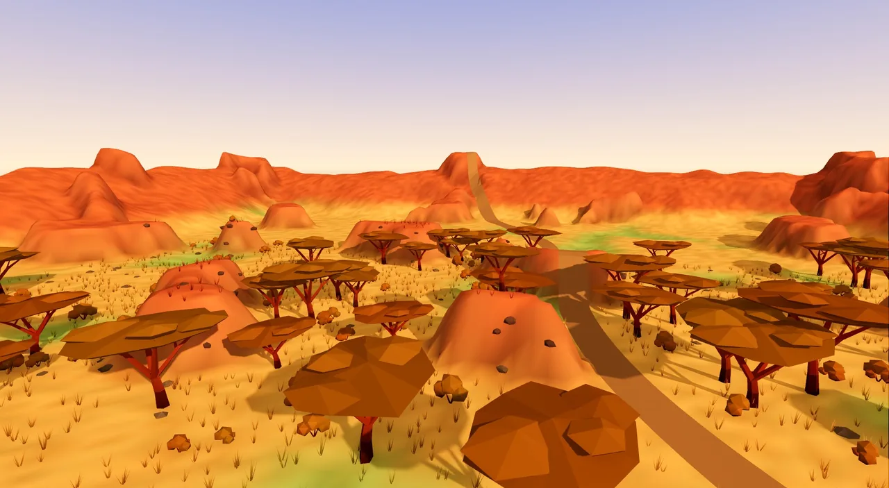
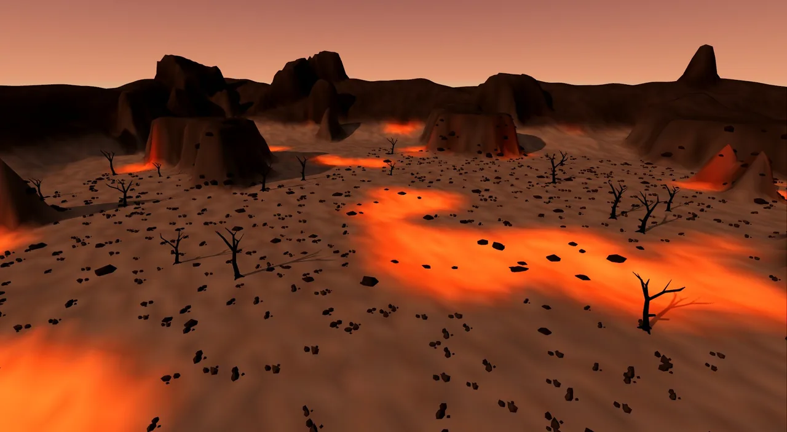
.glb, .blend or .tscn in a biome layer: it is drawn as one MultiMesh per chunk, with collision if you want it.Put addons/lowpoly_terrain_editor from the
repository in your project's addons/ folder.
Project > Project Settings > Plugins, tick Lowpoly Terrain Editor.
In a 3D scene, then drag in the view or click Generate Map in the Inspector.

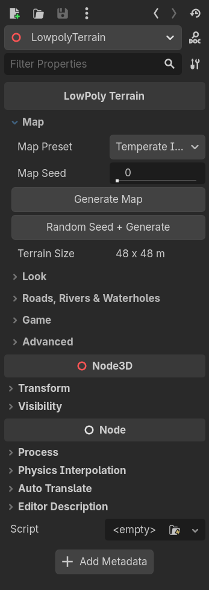